Potion Maker
Colours

Cores
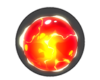 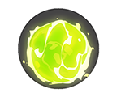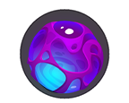 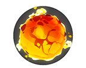 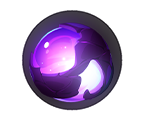
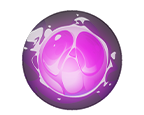
Particles
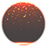 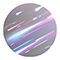 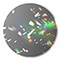Tags
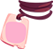Backgrounds
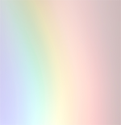 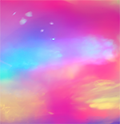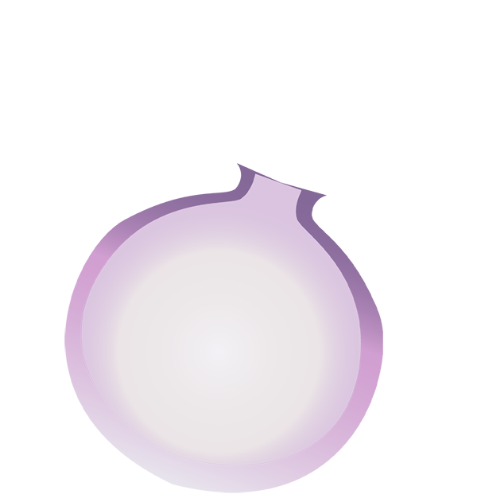
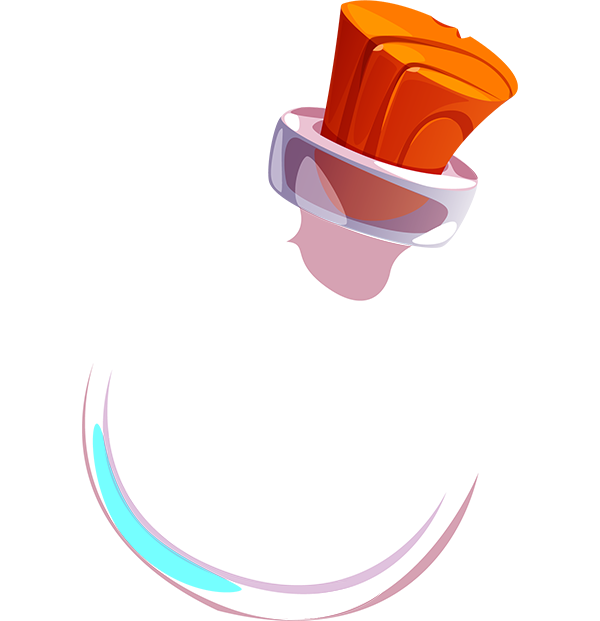
Output
Welcome to The Adventurer's Emporium, a one stop shop for all your dungeon crawling needs! Are you in the market for a magic potion? The Adventurer's Emporium has a dedicated potion master ready to create a brew just for you! Here's how it works:
Potion Maker
Colours
Cores
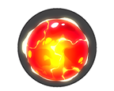 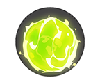Particles
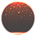 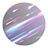 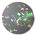Tags
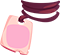Backgrounds
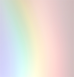 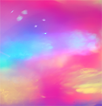Output
When this semester began, I was unsure about how well I would take to coding. I was worried that it being a number-oriented sort of activity, I might struggle to learn it. As time went on, I began to understand the coding languages we were learning in class better and my confidence grew a lot.
The project that made me the proudest was the Bio Page project. I created a wireframe and made it my goal to try and create a web layout that would match as closely as possible. Seeing that I can create what is in my head to the same degree as any other artform made me feel so accomplished and it changed how I viewed coding.
I learned a lot from both my wins and my losses this semester. There were parts of projects that I really wanted to see come to fruition but ultimately had to be axed to attribute the worktime to more important components. Learning to let go of your overarching idea and make compromises is a difficult skill on its own, and I feel as though I really grew in that area.
If I were able to do anything over again, I am not entirely sure I would. The type of person I am, I struggle to come to terms with making mistakes. The idea that any mistake is avoidable, and I must not miss any, is a domineering part of myself that needs to be put to rest. The things that I did wrong in various projects may not have improved my grade, but I believe that it has improved a different part of me and my ability to let things be. Learning and mistakes both help us grow as people, and I feel as though I have grown immensely this semester.
Along with that newfound perspective I would also like to continue looking at future projects with the workflow process in mind. Outlining a project’s goals is fine, however the added element of including the planning process as a goal in and of itself was very helpful. When a classmate or I felt stuck or unsure how to begin, the planning goals we laid out for ourselves acted as both a fallback and a prompt.
The skills and understanding I have gained throughout this course go beyond coding, I am growing as an artist as well.
Thank you for everything!
Shayden